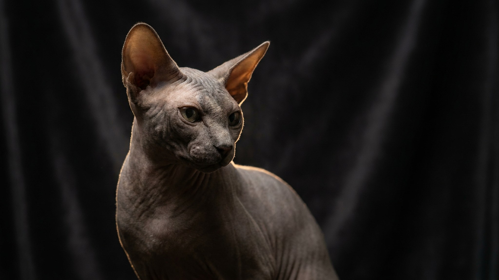

Петерболд заходит за вами в ванную, спит под одеялом и встречает у двери — по повадкам это скорее собака, чем кошка. Секрет в происхождении породы и почти голой коже, которая диктует и характер, и уход. Разберём, кому подходит петерболд, почему он постоянно ищет тепло и что с его кожей нужно делать каждую неделю.
🐾 Питомец ведёт себя странно?
AnimaLife расшифрует поведение кошки и собаки и подскажет, что делать. Попробуйте бесплатно прямо в мессенджере.
Петерболд — петербургская порода, выведенная от донского сфинкса и ориентала. От ориентала ему достались ум, разговорчивость и бесконечная привязанность к человеку. Это не тот кот, что живёт сам по себе.
Петерболд подойдёт тому, кто хочет кота-компаньона и готов уделять ему внимание. Для человека, которого целыми днями нет дома, это не лучший выбор.
У породы либо совсем нет шерсти, либо остаётся лёгкий «велюр» или пушок. Кожа быстро отдаёт тепло, поэтому кот активно ищет его сам: залезает под плед, жмётся к человеку, лежит у батареи или на тёплой технике.
Шерсть у обычных кошек впитывает кожный жир. У петерболда её нет, поэтому секрет скапливается на коже и в складках, оставляя коричневатый налёт. Это нормальная физиология, а не болезнь — просто коже нужна регулярная помощь.
Голое тело тратит больше энергии на обогрев, поэтому петерболды активны и обладают хорошим аппетитом. Кормите сбалансированным рационом для активных кошек, следите за весом и всегда держите доступ к свежей воде. Конкретный рацион и порции обсудите с ветеринаром — они зависят от возраста и образа жизни кота.
🐾 Здоровье питомца под контролем
AI-ветеринар, дневник здоровья и персональные советы для вашего питомца — установите AnimaLife бесплатно.
🐾 Понравился разбор?
Подпишитесь на канал — каждый день разбираем по одному тревожному симптому у кошек и собак: что в пределах нормы, а когда пора к врачу. Подпишитесь, чтобы не пропустить разбор, который может спасти здоровье вашего питомца.
Материал носит информационный характер и не заменяет очную консультацию ветеринара.